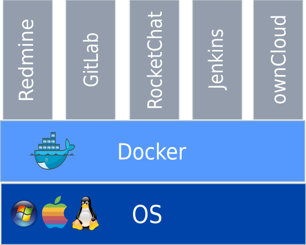

Re:ゼロからはじめる開発環境構築
The Automation Tool
Created by Fukuda / Tenma
Agenda
- 前置き
- これまでは
- 自動化しよう!!
- こんなの作りました
- 機能一覧
- dockerとは
- dockerを使うメリット
- 今後の課題
前置き
みなさま、チームで開発をしていく上でどのようなツールをお使いでしょうか？
課題管理、進捗管理、資材管理、情報共有・・・
ツールを使用したい場面は多く、その環境を構築するには時間がかかるものです。
これまでは
- サーバ用意
- OSインストール
- アプリインストール
- 準備完了
- アプリ起動。利用開始
これ・・・面倒ですよね？
設定ミスって起動しないですよね？
自動化しよう!!
自動化には様々なメリットがあります。
- 時短できる
- 人的ミスがなくなる
- 同じ環境を何個も作れる
- 周りの目が変わる(かも)
つまり・・・
自動化することで作業効率が上がり、確実にコスト削減できます。
こんなの作りました
コマンド一つで👇のツールを起動します
- Redmine / プロジェクト管理
- GitLab / バージョン管理
- RocketChat / コミュニケーション
- Jenkins / CI
- ownCloud / ファイル共有
機能一覧
- ツール間で連携します
- 定期的にバックアップします
- アカウント情報の共有(一つのアカウントで全てのツールを利用)
- 使いやすいプラグインを入れた状態で起動します
使い方は簡単!!
- Dockerをインストール
- Dockerのネットワーク作成
$docker network create reverse_proxy
$docker network create backbone
- start-all-service.shを実行
$./start-all-service.sh
- http://localhostにアクセス
dockerとは
この自動化ツールはdockerを使用しており、docker上で動きます
dockerとはコンテナ型仮想化を実現するOSSです

自動化ツール構築イメージ
dockerを使うメリット
- マシンにdockerが入っていれば、どのOS上でも動く
- それぞれのツールはコンテナと呼ばれる隔離領域で動くので、ホストとなるマシンを汚さない
- dockerコンテナは捨てたり、再作成したりが簡単にできる
- 自動化の内容はdockerfileにコードで記述できるので、パッケージングが容易
- Windows Server 2016で採用されるなど、勢いがある
今後の課題
- コマンドではなく、画面から操作可能にする
- 各サービスへのアクセスを、「http(s)://hostname/projectname/redmine」のようにする